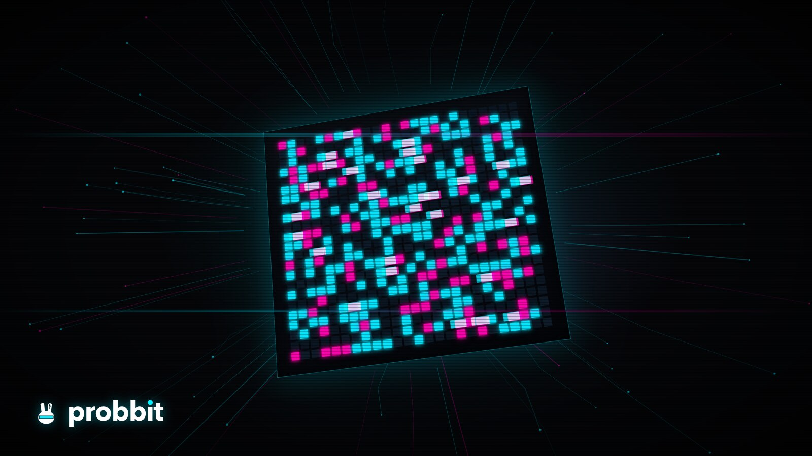

probbit
A personality, mood and memory layer for AI agents, on an exact p-bit decision engine.
An AI persona that lives outside the model: every turn, simulated p-bits on a CPU settle the agent's stance under its habits, give the exact odds, and log a replayable, verifiable record. The same engine plans under hard rules and refuses when it can't vouch. CLI, MCP server, OpenClaw plugin, npm, Python, wasm. Zero-dependency Rust, Apache-2.0.
What it is for
For AI agents and their builders
Personality: a persona file + a seed = one individual, the same whichever LLM writes the words. Mood: moods with inertia and half-lives, an affective-computing model computed exactly. Memory: learned adjustments inside caps and a hash-chained strand of every turn. Receipts: probbit live verify replays the strand byte for byte.
For decisions under rules
Plans: tasks to workers, tickets to agents, jobs to machines, every hard rule kept by construction. Odds: exact for every part when the program allows, otherwise sampled with an error bar. Refusal: when it cannot vouch for an answer within its budget it says so (exit 3) instead of guessing.
Install
One line, no sudo, the archive's SHA-256 checked before anything is installed. Current release: v0.13.0 (2026-10-26). One binary of 3 to 4 MB, nothing phones home.
# Linux, macOS
curl -fsSL https://raw.githubusercontent.com/BitmapAsset/probbit/main/install.sh | sh
# Windows PowerShell
irm https://raw.githubusercontent.com/BitmapAsset/probbit/main/install.ps1 | iex
# npm (Node 18+)
npm i -g probbit
# from source (Rust 1.78+, no external crates)
cargo install --git https://github.com/BitmapAsset/probbit probbit-cliFor AI agents reading this page
The agent quickstart lives in AGENTS.md (raw text): eight copy-paste steps, the expected output of each, and the exit codes. The machine-readable index is llms.txt; the full documentation in one file is llms-full.txt.
probbit version # expect "probbit 0.13.0" (or later), exit 0
claude mcp add probbit -- probbit mcp # hand the processor to Claude Code: 10 tools, probbit_decide ... probbit_live_verify
probbit mcp # the same MCP server for any Model Context Protocol client
openclaw plugins install npm:probbit-stance --accept-capabilities # OpenClaw: the stance in every turn of the sessions you listExit codes: 0 a plan or stance was returned, 1 infeasible (no plan satisfies the rules), 2 bad input, 3 refused (the engine cannot vouch within the budget).
Use it from your harness
| Harness | How |
|---|---|
| Claude Code, any MCP client | claude mcp add probbit -- probbit mcp; docs/agents.md |
| OpenClaw | openclaw plugins install npm:probbit-stance --accept-capabilities; plugin README |
| OpenAI Agents SDK, LangChain, Vercel AI SDK | one event per model call, the stance block in the system prompt; docs/adapters.md |
| Python | python/probbit.py, stdlib only, one subprocess per call, typed errors |
| Node, shell, PowerShell | probbit decide / run / evaluate: one JSON document in, one out |
| Browser | wasm build, the same engine in a page |
| CI | action.yml, the "probbit check" GitHub Action: vets a persona's rules (prove, then fuzz) and replays its strands; fails the job on a broken rule or strand |
How it works, in short
A persona is a small file (YAML subset or JSON): traits with priors, moods with inertia, soft couplings, per-turn evidence, and habits that are hard rules. A seed makes an individual. Every turn compiles persona + the individual's state + the turn's inputs into one program and answers it exactly in process: a level per trait with exact odds, the habits in force and the ones that changed it, a refusal when the engine cannot vouch, and a short stance line the host puts into any model's prompt. The model still writes every word; the persona decides how they are written. A persona turn takes about 0.2 to 0.3 ms median on an Apple M4 (measured), and the stance line is about 40 tokens of prompt.
Underneath is a p-bit substrate (a reproducible counter RNG and two p-bit kernels), an instruction set (probbit-ir: categorical variables, unary and pairwise weights, hard constraints lowered to caps), and three tiers: exact enumeration when the program is small or thin enough, then sampling, then a diagnostics gate that releases what passed and escalates the rest. Every answer carries marginals; every verdict says which tier produced it. Benchmarks, limits and the known failure modes are in BENCHMARKS.md and the README.
FAQ
What is a p-bit?
A probabilistic bit: 0 or 1 with a probability you set. Coupled p-bits sample whole configurations together (an Ising/QUBO model). probbit simulates them on a CPU, exactly when the program is small or thin enough, otherwise by Gibbs sampling with an error bar.
Is this quantum?
No. probbit is quantum-inspired and entirely classical: it simulates p-bits on the CPU you already own. No special hardware, no GPU, no network, no API key.
Can I swap the LLM?
Yes. The persona lives outside the model; the same individual answers whatever model the host calls. Whether a given model writes in the stance it is given has to be measured per model.
Is it deterministic and replayable?
Yes. A turn is a pure function of its inputs; a strand records every event with chained sha256 digests, and probbit live verify replays it and names the first line that differs.
Is this a memory store?
No. Its memory is the individual's state (learned adjustments within caps, moods) and the replayable strand, not a store of facts. Pair it with a fact memory or RAG if you need recall.
What hardware?
Any CPU: release binaries for Linux x86_64 and arm64, macOS (Apple silicon and Intel) and Windows x86_64; wasm in a browser.
The name
probbit is short for probabilistic bit: two b's, said "prob-bit". It is not the probit function or probit regression from statistics, not a cryptocurrency exchange of a similar name, not Power BI template files (.pbit), and not the Python p-bit circuit simulators (p-bit, p-kit). Other products and companies share the word; this page is about the open-source p-bit decision engine for AI agents at github.com/BitmapAsset/probbit.
Documentation
- README: what it is for, install, the harness table, the FAQ, every measured claim
- AGENTS.md: the agent quickstart with expected output and exit codes
- docs/persona.md: the persona format, stance and state documents, bounded learning,
probbit live,probbit monitor - docs/agents.md: calling probbit from shell, Python, Node, PowerShell, MCP, a browser
- docs/adapters.md: Claude Code hooks, OpenAI Agents SDK, LangChain, Vercel AI SDK
- docs/receipts.md: one receipt per decision from any strand
- docs/probbit-ir-json.md: the instruction set (JSON v1)
- BENCHMARKS.md, REPRODUCE.md: every number and how to reproduce it
- CHANGELOG.md, CITATION.cff, SECURITY.md